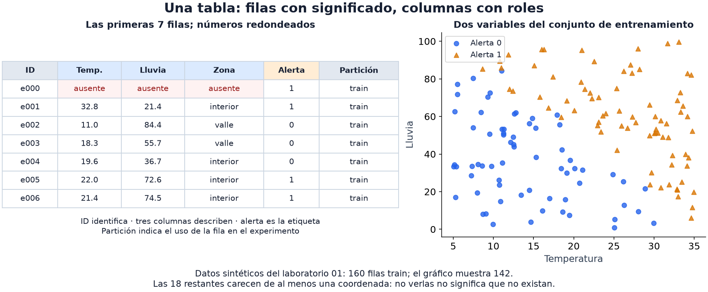

01 · Pandas y mirar los datos
Nivel 1 — El piso · Ruta de Aprendizaje
Una matriz guarda valores; una tabla les da nombres. pandas organiza esos valores en un DataFrame, con filas y columnas que pueden tener tipos numéricos, textos y ausencias. Antes de aprender una regla con ellos, interesa saber qué representan: una fila por estación no describe la misma muestra que una fila por medición de una estación repetida cien veces.
En el laboratorio de este capítulo, cada fila es una estación ficticia.
temperatura, lluvia y zona son variables de entrada, también llamadas
features. alerta es la respuesta que después intentaremos predecir:
la etiqueta. id identifica la fila y particion indica su papel en el
experimento; ninguno se usa como feature en ese ejemplo.

La figura conecta dos vistas del mismo dataset: a la izquierda, las primeras siete filas; a la derecha, las 160 filas de entrenamiento situadas por temperatura y lluvia. Solo aparecen 142 puntos: 18 filas carecen de al menos una de esas coordenadas. El color distingue la alerta, pero no muestra la zona. Una figura selecciona información; la tabla permite descubrir qué dejó fuera.
Una tabla pequeña que podemos recorrer entera
Esta selección del cuaderno 01 · Tabla heterogénea está redondeada para
leerla. None representa un dato ausente. Los bloques siguientes continúan
este ejemplo, sin depender de un CSV que todavía no hayas descargado.
import pandas as pd
df = pd.DataFrame({
"id": ["e000", "e001", "e002", "e003", "e004", "e005", "e006"],
"temperatura": [None, 32.8, 11.0, 18.3, 19.6, 22.0, 21.4],
"lluvia": [None, 21.4, 84.4, 55.7, 36.7, 72.6, 74.5],
"zona": [None, "interior", "valle", "valle", "interior", "interior", "interior"],
"alerta": [1, 1, 0, 0, 0, 1, 1],
"particion": ["train"] * 7,
})
print(df)En el cuaderno completo se carga con pd.read_csv("datos/estaciones.csv"),
desde su carpeta. El DataFrame resultante se inspecciona de la misma manera:
print(df.shape) # (7, 6)
print(df.dtypes) # tipo de cada columna
print(df.isna().sum()) # una ausencia en cada feature
print(df["alerta"].value_counts()) # cuatro 1, tres 0
print(df["alerta"].value_counts(normalize=True)) # proporciones
print(df.describe()) # resumen de columnas numéricas| Observación | Pregunta que ayuda a responder |
|---|---|
| Forma | ¿Cuántas filas y variables tengo? ¿Cuántas filas son unidades independientes? |
| Tipos | ¿Qué valores son cantidades y cuáles categorías que habrá que representar? |
| Ausencias | ¿Qué falta, cuánto y en qué casos? |
| Balance de etiquetas | ¿Qué proporción acertaría prediciendo siempre la clase más frecuente? |
| Rangos y dispersión | ¿Son plausibles estos valores en sus unidades? ¿Hay casos que investigar? |
El tamaño orienta el coste y cuánta evidencia hay, pero no elige el modelo por sí solo. Tampoco un número extremo es necesariamente erróneo: una lluvia muy alta puede ser un evento real o una unidad mal interpretada.
Agrupar para hacer visible una diferencia
groupby reúne filas con la misma clave y calcula un resumen para cada grupo:
por_zona = df.groupby("zona", dropna=False)["temperatura"].agg(["count", "mean"])
print(por_zona)Ahora la pregunta es «¿cuántas temperaturas conocidas hay en cada zona y cuál
es su media?». count cuenta valores no ausentes; la media también los omite.
dropna=False conserva un grupo para las filas sin zona conocida. Si omites
esa opción, esas filas no aparecen como grupo.
Agrupar también sirve para investigar el origen de los datos. Si una tabla
más grande tiene varias mediciones por sensor, groupby("sensor").size()
revela cuántas aporta cada uno. Compartir origen puede crear dependencias,
pero el conteo no las demuestra por sí solo. Para predecir sensores nuevos,
Split por grupo mantiene sensores enteros a un lado de la evaluación;
para nuevas mediciones de sensores conocidos la pregunta sería distinta.
Unir tablas sin multiplicar observaciones por accidente
Supón que otra tabla describe cada zona. Esta unión busca su descripción para cada fila de nuestra tabla:
metadatos = pd.DataFrame({
"zona": ["interior", "valle"],
"descripcion": ["zona interior ficticia", "valle ficticio"],
})
completo = df.merge(metadatos, on="zona", how="left", validate="many_to_one")
assert len(completo) == len(df)how="left" conserva las filas de la izquierda aunque no encuentre descripción.
validate="many_to_one" expresa que muchas estaciones pueden compartir zona,
pero a cada zona le corresponde como máximo una fila de metadatos. Si repites
valle en esa tabla, pandas rechaza la unión en vez de multiplicar sus filas.
En otra tarea una relación muchos-a-muchos podría ser intencional; lo importante
es saber qué representa una fila antes y después de unir.
Elegir un gráfico por la pregunta
Un histograma muestra cómo se reparten los valores de una variable. Un gráfico de dispersión sitúa cada fila mediante dos coordenadas. El color puede añadir la etiqueta para explorar si aparece un patrón:
import matplotlib.pyplot as plt
fig, ax = plt.subplots(1, 2, figsize=(10, 4))
df["alerta"].value_counts().sort_index().plot.bar(ax=ax[0], color="#287da3")
ax[0].set(title="¿Cuántas filas de cada clase?", xlabel="alerta", ylabel="filas")
for etiqueta, grupo in df.groupby("alerta"):
ax[1].scatter(grupo.temperatura, grupo.lluvia, label=f"alerta={etiqueta}")
ax[1].set(title="¿Qué combinación aparece en cada clase?", xlabel="temperatura", ylabel="lluvia")
ax[1].legend()
plt.tight_layout()
plt.show()La fila e000 no aparece en el gráfico de dispersión: le faltan ambas
coordenadas. Mirar solo el dibujo podría hacerte olvidar su existencia; la
tabla de ausencias completa esa información. Con siete filas tampoco hay
base para atribuir una regla causal a lo que sugiera la figura.
Para imágenes, texto o audio cambia la representación, pero sigue sirviendo mirar ejemplos crudos junto a sus etiquetas. Robot Chasing proporciona un visualizador para relacionar los tableros con sus arreglos numéricos. Puede ayudar a formular hipótesis; abrirlo no garantiza entender la solución.
Lo que una columna parece ser y lo que realmente permite saber
Tipo numérico y significado numérico son cosas distintas. Un ID puede ser
un entero sin que sus distancias tengan sentido. Una medida puede venir como
texto porque alguien escribió "21 grados". Además, pandas reconoce "N/A"
como ausencia por defecto al leer CSV; no es un ejemplo de texto que
necesariamente convierta toda una columna numérica en cadenas. Las opciones
de lectura y los valores concretos deciden el resultado.
Documentación de read_csv.
Una correlación alta es una pista, no una prueba de fuga. La fuga aparece
si das al modelo información que no estará disponible al predecir: por ejemplo,
una columna reparacion_realizada calculada después de detectar una avería.
Una buena medida previa podría predecir muy bien la etiqueta legítimamente.
La procedencia y el momento de disponibilidad son más decisivos que un umbral
de correlación; además, una relación no lineal puede tener correlación baja.
Modificar una selección no expresa modificar el original. En pandas 3, Copy-on-Write mantiene separados esos cambios:
sub = df[df["temperatura"] > 25]
sub["calida"] = True # cambia sub
# Para crear esa columna directamente en df:
df["calida"] = df["temperatura"] > 25Si quieres asignar solo en algunas filas del original, puedes usar
df.loc[condicion, "columna"] = valor. En este ejemplo una temperatura ausente
no supera 25; no significa que sepamos que la estación es fría. La política
para valores ausentes debe respetar lo que quieres representar.
Un experimento para mirar
En Laboratorios guiados, el cuaderno 01 · Tabla heterogénea amplía esta
tabla y combina sus columnas en un modelo. Imputar reemplaza ausencias con
un valor aprendido, como la mediana de entrenamiento. One-hot representa
una categoría con indicadores: valle puede ser [1,0] e interior, [0,1].
ColumnTransformer aplica un procedimiento a cada tipo de columna.
La transferencia incluye una zona nueva. Con handle_unknown="ignore", su
codificación usa ceros en los indicadores conocidos: el programa puede seguir,
pero no inventa un efecto para esa zona. ¿Qué información numérica conserva
para decidir? ¿Qué cambia si quitas una columna o multiplicas una de sus unidades?
12 - Embeddings retomará cómo aprender otras representaciones de categorías.
Pandas de Kaggle Learn es apoyo opcional en inglés. Más adelante, Antique Painting Authentication añade otra situación: el valor 0 de su etiqueta indica muestras sin respuesta conocida, no una clase supervisada más.
Ya distinguimos entradas, etiquetas y ausencias. El siguiente paso es dejar que un modelo aprenda una relación entre entradas y respuestas, y probarla en filas que no usó para aprender.
← 00 - De programar a programar con datos · Ruta de Aprendizaje · 02 - Tu primer modelo →